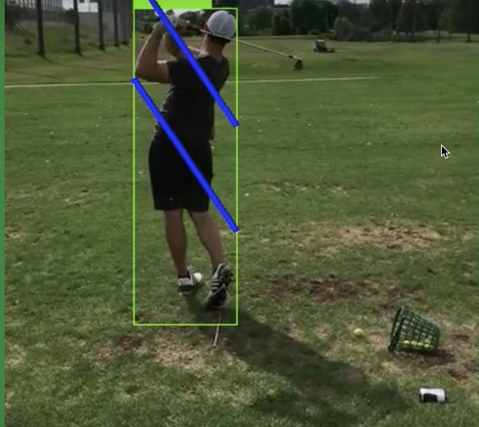
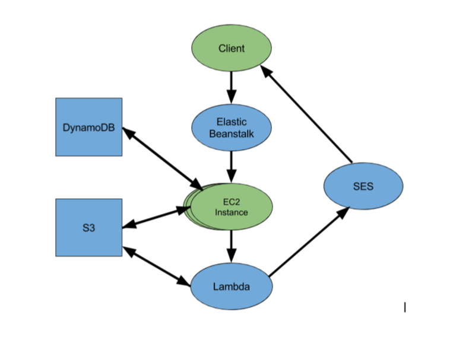

SwingGood is a free online service providing an archival of golf swing clips and object-recognition based, personalised swing feedback, built using Amazon Web Services.

Swing technique is a fundamental part of golf, separating amateurs from professionals. The correct alignment of the shoulders and knees is crucial in determining accuracy, however, body misalignment is difficult to spot with the naked eye. The SwingGood application provides users with an edited version of their uploaded video which overlays track lines over the original. The track lines follow the movement of the shoulders and knees during the swing, allowing the user to see where their swing is misaligned. SwingGood uses TensorFlow for object recognition to track movement of the shoulders and knees.
SwingGood is still in the early stages of development. Currently implemented are the following features:
Users can create an account and sign in to their personal profile.
Signed in users can upload a short mp4 of their golf swing.
Users will receive an edited version of their uploaded clip, available to view in their user portal.
Signed in users can review both the raw and edited clip as both videos are stored by the service.
Users are sent an email notification when their uploaded clip has been analysed by SwingGood and is ready to view in their user portal.
Amazon Web Services (AWS) is a cloud service provider most commonly used by developers looking for an IaaS solution and has been used by numerous companies including Air B&B and Autodesk. Below shows a system graphic of the SwingGood system architecture and AWS components.

The image processing component of the application requires a program that is able to perform object recognition on a golf swing clip to recognize the shoulder and knees, overlay calculated track lines based on recognized golfing technique and output a new edited video. The contorted form of the human body during a golf swing requires the object recognition component of this functionality to be sophisticated. The application is coded in the Python programming language. I initially experimented with the OpenCV library for object recognition, namely Haar feature cascades. However, after much experimentation this method alone proved insufficient to consistently recognize the human body in motion, provoking the use of a pre-implemented open source object recognition module published by the head of data science at Idealo. This module uses a combination of Google’s TensorFlow and OpenCV to provide highly advanced object recognition and tracking. SwingGood uses this module as its basis for its functionality. We also rewrite the module to take an mp4 clip as input, output an mp4 clip on termination and include an algorithm to calculate the overlayed track lines based on the angle of the shoulders and knees inside the bounding box provided by the original module.